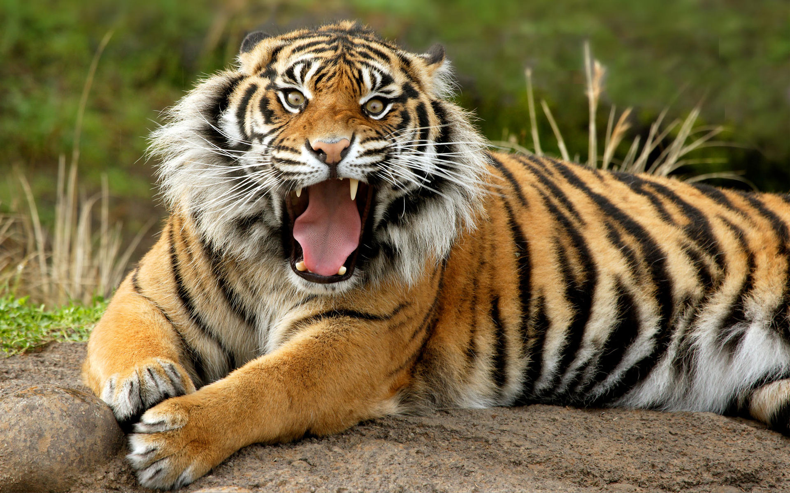

El tigre de Sumatra (Panthera tigris sumatrae) es una subespecie de tigre que se encuentra únicamente en la isla indonesia de Sumatra. La población salvaje se estima entre los 400 y 500 animales, que se agrupan en su mayoría en los cinco parques nacionales de la isla. Los últimos análisis de ADN revelan la existencia de ciertas características genéticas únicas, indicando que el tigre de Sumatra está en el límite entre la subespecie y su separación como nueva especie diferente del resto de tigres, si no se extingue antes. Debido a esto, se ha sugerido que deberían destinarse aún más esfuerzos a la conservación de los tigres de Sumatra que a los de otras subespecies. La mayor amenaza que se cierne sobre ellos es la destrucción de su hábitat (constante incluso en los a priori protegidos parques nacionales); además, 66 tigres murieron por disparos entre 1998 y 2000, lo que constituye aproximadamente el 20 % de la población total. En 2017 un equipo de investigadores pertenecientes a la UICN publicó una nueva clasificación taxonómica de la familia felidae en la que solo reconocían a dos subespecies de tigres, a saber: el tigre de Asia continental (Panthera tigris tigris), el cual agrupa al tigre de Bengala, siberiano, de Indochina, sur de China, malayo, así como los extintos tigres del Caspio y los tigres de la Sonda (Panthera tigris sondaica), que agrupa al tigre de Sumatra, así como a los ya desaparecidos tigres de Java y Bali.

¿Por qué se encuentra el Tigre de Sumatra en Peligro de Extinción?
Actualmente no existen mas de 500 ejemplares de esta subespecie en estado salvaje, y esta clasificado según la lista roja de la IUCN en estado crítico de extinción.
Las amenazas a esta subespecie son puntuales:
La reducción de su hábitat, su espacio se reduce por invasión del hombre con la tala de arboles, lo cual trae como consecuencia también la disminución de alimentos para estos felinos (por la reducción de la fauna).
La caza furtiva de este animal, ya que son apreciados y comercializados su piel, colmillos y garras, estos últimos para la medicina tradicional de los países asiáticos como: Malasia, Singapur, China, Japón y otros.